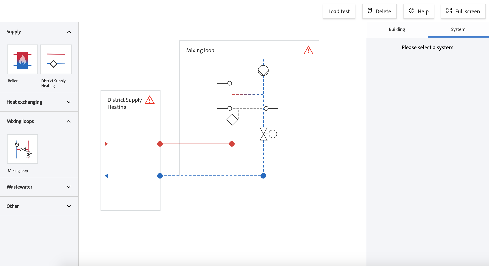

Framework agnostic web components with Stencil
Nicolai Davies
Outline
- Origin of web components
- Introduction to Stencil
- Stencil API/Syntax
- Consuming stencil components
- BuildingConnect
- GiC
- DSM
Why do we need components?
<div class="menu">
<div class="menu-item">Item 1</div>
<div class="menu-item">Item 2</div>
<div class="menu-item">Item 3</div>
<div class="menu-item">Item 4</div>
</div>
<script>
document.querySelector('menu-item').addEventListener('click', function() {
...
})
</script>
<style>
.menu {
display: block;
float: something;
}
</style>
Components to the rescue!
class HelloWorld extends React.Component {
hello() {
console.log('Hello!')
}
render() {
const styles = {fontSize: '1em'}
return <h1 style={style} onClick={this.hello}>Hello, {this.props.name}<h1>;
}
}
<HelloWorld/>
I have components,
now what?
- Buttons, dropdowns, menus etc.
- Can be shared.
- They're all written in React
- A new project uses Angular/Ember/Vue
Web Components
- Natively-supported, standardized JavaScript components
- Run in every framework or on their own
- Answer to the shared-component problem
- Powered by the Custom Element spec
- Native browser support: Chrome, Safari, good polyfills
Web Components spec
- Shadow DOM
- Custom elements
- HTML Templates
- CSS Scoping
- CSS/HTML Modules
Custom Element Example
<my-component size="large" theme="light"/></my-component>
Custom Element Example
const template = document.createElement('template');
template.innerHTML = `
<div> ... </div>
`;
class MyComponent extends HTMLElement {
constructor() {
this._shadowRoot = this.attachShadow({ 'mode': 'open' });
this._shadowRoot.appendChild(template.content.cloneNode(true));
const container = this._shadowRoot.querySelector('div');
}
connectedCallback() {}
disconnectedCallback() {}
attributeChangedCallback() {}
}
window.customElements.define('my-component', MyComponent);
Can we make it easier to build Custom Elements?
- Still want framework features
- Desire to manage bundles of components
- TypeScript?
Stencil: A Compiler for Web Components
What is Stencil?
- A compiler that generates Custom Elements, part of the Web Components spec
- Not a framework: output is 100% standards-compliant Custom Elements
- Adds powerful framework features to Web Components
- Created and used heavily by the Ionic Framework team. Ionic 4+ is built on it!
Why Stencil?
- Stability: Desire to use web standards and avoid constant framework churn
- Interoperability: Ability to create components that work across all major frameworks.
- Familiarity: features from frameworks but in a leaner, standards-compliant package
Example Stencil Component
import { Component, Prop } from '@stencil/core';
@Component({
tag: 'my-name',
styleUrl: 'my-name.scss'
})
export class MyName {
@Prop() name: string;
render() {
return (
<p>
Hello, my name is {this.name}
</p>
);
}
}
Stencil-compiled Components have
- Virtual DOM: fast DOM updates without common DOM performance pitfalls
- Lazy Loading: By default components load asyncronously and can be bundled with related components
- Reactivity: Efficient updates based on property and state changes
Stencil-compiled Components have (cont.)
- High-performance Rendering: async rendering system, similar to React Fiber
- JSX: Popular and familiar markup system pioneered by React
Stencil API
- @Component(): set tag name and associated stylesheet (Sass or plain CSS)
- @Prop(): Create a property on the component
- @State(): local state that should be watched during change detection
- @Event(): Trigger events on a component
- @Listen(): listen for events fired from children
- @Element(): grab the DOM element for this component
Consuming Stencil
import { applyPolyfills, defineCustomElements } from 'my-components/loader';
applyPolyfills().then(() => {
defineCustomElements(window);
});
Tell the framework to ignore errors from certain elements
That's it (ish)
Web component quirks
- Angular: Works, but type support could be better
- React: Needs thin wrapper to update arrays and objects.
- Vue: All good
- Ember: All good
- HTML/JS: Of course
DS Plugin
- Angular: Types and adds ngModel support
- React: Thin wrapper to update arrays and objects
Now it's like using native React/Angular components.
Browser support

BuildingConnect: Dumbledore
BuildingConnect: Dumbledore
GiC
- BuildingConnect: Angular and React
- iGrid: PHP
- GiM: React
- Future projects?
DSM
- New set of components
- Shared across all teams
- Explore Stencil